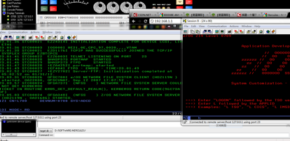
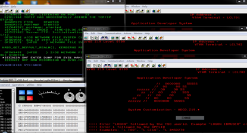

搭建z/OS虚拟机常用的LoadParm
2010-06-04
LOADPARM Description(z/OS 1.6)
在启动z/OS虚拟机的时候选择的LoadParm不同，意味着大机将启动不同的服务，说明如下：
CS CLPA and cold start of JES2. Base z/OS system functions i.e. no CICS, DB2, IMS, WAS, etc.
00 Warm start of JES2. Base z/OS system functions i.e. no CICS, DB2, IMS, WAS, etc.
WS Warm start of JES2. Base z/OS system functions i.e. no CICS, DB2, IMS, WAS, etc.
DC CLPA, brings in CICS LPA modules, cold start of JES2, starts up DB2 and CICS.
DB Warmstart of JES2 and starts the DB2 and CICS.
DI CLPA and cold start of JES2 and loads the IMS Libraries. IMS must be manually started.
CC CLPA and cold start of JES2, loads the CICS Libraries, starts up CICS, no DB2.
CW Warm start of JES2, and starts up CICS.
7C CLPA, cold start of JES2, starts up DB2 V7, no CICS.
7W Warm start of JES2, starts up DB2 V7, no CICS.
8C CLPA, cold start of JES2, starts up DB2 v8, no CICS.
8W Warm start of JES2, starts up DB2 v8, no CICS.
IC CLPA and cold start of JES2 and load the IMS Libraries, start IMS, no DB2 or CICS.
IW Warm start of JES2 start IMS, no DB2 or CICS.
AC CLPA and cold start of JES2 load IMS and CICS libraries, start IMS, DB/2, and CICS.
AW Warmstart of JES2. start IMS, DB/2, and CICS.
BC CLPA and cold start of JES2, load WAS libraries, WAS is manually started
BW Warmstart of JES2. WAS is manually started.
99 Points to IODF99 for IPL on MP3000. Reply 00,SYSP=xx were xx is any of the above options i.e. for cics only xx=cc or cw.
Device number: 0A80 Load Parm: 0A82CSM1

Device number: 0A80 Load Parm: 0A82DBM1
